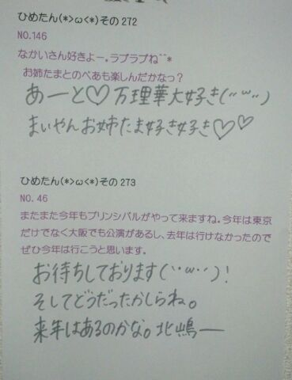

| 2013/06 20 Thu | ひめたん(*>ω<*)そ の307 |

前髪革命☆
...あ、あれわかんない？
重いねーってよく言われるから
若干量減らしてるんだよ。夏だからね。
うんうんわかるよね。ごほんっ
6th「ガールズルール」
シングルの詳細が発表されたねー
そうですね(*^ω^*)
まず、アンダー楽曲は
すでに知ってる方もいるかもだけど
「扇風機」ですっ
夏っぽい感じになってます。
ガールズルールとはまた違った、夏。
まあ聴いてみてって感じかなー
ダンスも可愛らしくて好き♪
てことでひめきゅんさんは
全部買ってもいいけど
イチオシはtypeBですよろしくね！
あっ
えと、その、
typeAも(^O^)笑
はーいーそうですね。
冷房の風は苦手
人工の風は苦手です
最近は外と室内の寒暖差にやられて
もう、つらたん(´・ω・｀)
レッスンしててね
体力の著しい低下を感じたよー
まだ17よ(´・ω・｀)ふふへ

 ひめたんならどういう風に
ひめたんならどういう風に
集中力高めるのか教えて欲しい！
あたしが答えていいやつかなこれ。
えっと、とりあえずひめたんなら、
現役時代のひめたんなら、
勉強前に15分寝てた！
どうしたらひめたん又は
ひめたんみたいな子と付き合えるかなぁ
ひめたんみたいな子は
ひめたんしか居ないよ(〃ω〃)
ひめたんはJAZZとかフュージョンには
興味ない？もしCD差し入れしたら
聞いてくれたりするかにゃ？
フュージョン？はじめて聴いたぞー
いろんなジャンルの曲聴いてみたいー♪
ひめたんの５年後、10年後
どうなりたいか知りたいわ
ひめたんは知るの怖いぞー(´・ω・｀)
質問なんだけど
握手会でニックネームとかつけてもらえる？？
いーおー
気に入らんかったらゆってー
センスに自信はないけどーんふふ
ひめたんの似顔絵描いて手紙書いたら嬉しい？
嬉しい！飛び上がって喜ぶ！
これからの個握はどんな格好がいいかな？
任せるよー∩^ω^∩
どんなの着てるかなってのも楽しみだけど
なんならぴんくなんてどうかな。
ひめたん単推しなんだけど、
引き続き全力でひめたん応援していい？
迷惑じゃないかな？
迷惑なんてそんなことっっっっ
これからもよろしくです( ^ω^ )
ひめきゅんさんすきすきーっ

最近ペースが...。
ごめんね(´・ω・｀)
私たちのニューシングル
「ガールズルール」が
先行配信スタートしました！
レコチョクでは
携帯待受やサイン入り色紙をプレゼント!!
とってもかわいらしい、夏らしい
爽やかな曲になってます♪
詳しくは公式HPでみてね！
DLはこちら！
http://recochoku.jp/artist/30168093/

(＊´・ω・＊)
コメント(180)
2013/06/20 23:00